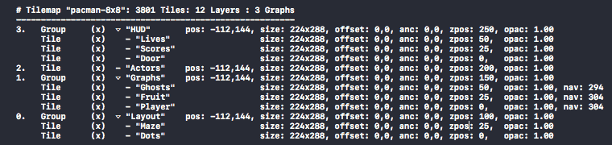

View on GitHub
View on GitHub Install in Dash
Install in Dash Debugging Reference
Debugging Reference
Debugging

Map Visualizations
Visualizing Tiled content is done via the DebugDrawOptions optionset. The options are available on the tile map node and layer nodes.
// draw the map's bounding shape
tilemap.debugDrawOptions = .drawBounds
// show object boundaries
tilemap.debugDrawOptions = .drawObjectBounds
// draw the grid & bounding shape
tilemap.debugDrawOptions = [.drawGrid, .drawBounds]
// show object bounds for an object layer
objectgroup.debugDrawOptions = .drawObjectBounds
// show tile shapes for a tile layer
tileLayer.debugDrawOptions = .drawTileBounds
To customize the grid color, set layer’s SKTiledLayerObject.gridColor property.
Visualizing Objects
Tiled vector objects can be globally shown/hidden so that you may easily work with them in Tiled, but not see them in your game. To see them, you can set the showObjects property on the tilemap node, or individual object layers.
// show all objects in the scene
tilemap.showObjects = true
// show objects in each object layer
for layer in tilemap.objectLayers {
layer.showObjects = true
}
// show objects for `one` object layer
collisionsLayer.showObjects = true
Note that layer visibility supersedes object visibility; layers hidden in Tiled will not show objects unless the layer is unhidden first.
Highlighting Tiles
You can highlight a tile using the SKTile.showBounds property:
// highlight the tile for .25 seconds
tile.highlightDuration = 0.25
tile.showBounds = true
The tile highlight color is stored in the SKTile.highlightColor property:
// set the tile highlight color for individual tiles
tile.highlightColor = SKColor.red
// set the highlight color for *all* tiles in the layer
tileLayer.highlightColor = SKColor.blue
Map Statistics
To see a quick overview of the current tilemap’s layers, use the SKTilemap.mapStatistics(default:) method:

The output represents a visualization of the scene hierarchy; nested layers are indented under their parent. Layer index and position are shown for top-level layers only.
1. Layer index (top-level layers)
2. Layer type (tile, object, group, image)
3. Layer visibility ("x" indicates layer is visible)
4. Layer hierarchy ("▿" indicates layer has children)
5. Layer size
6. Layer offset
7. Layer anchor point
8. Layer z-position
9. Layer opacity
10. Layer is static
11. Navigation graph node count
Next: Troubleshooting - Index